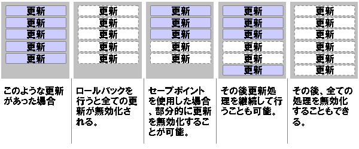

トランザクション
バッチアプリケーションにおけるトランザクション
バッチアプリケーションでは、オンラインアプリケーションとは違った、特有のトランザクション概念が存在します。
bathoryでは、以下のようなトランザクション機能をサポートします。
- セーブポイント
- コミットポイント
- リトライ
- リラン
セーブポイント
セーブポイントとは、一つのトランザクション上に作成した論理的なトランザクションのようなものです。 セーブポイントを使用しないトランザクションの場合、全て変更を行う・元に戻すというアトミックな操作を行うことができます。 セーブポイントを使用することにより、部分的なロールバックを実行することが可能になります。 セーブポイントはコミットを行ったわけではないため、ロールバックを行うことにより、全ての処理を元に戻すことも可能です。
例えば、注文ヘッダ・注文明細というテーブルを以下のような仕様で更新を行う場合、セーブポイントを使用すると簡易に処理を記述可能です。
- 直近１時間で受注した注文データを対象に以下の処理を行う。
- 明細に紐づく商品の割り当てを行う。
- 同一注文に紐づく商品が一つでも割り当てが行えなかった場合は割り当てた在庫の状態を元に戻す。
- 在庫が割り当てられなかった注文はスキップし、処理は続行する。
- ただし、致命的な問題が発生した場合は全てのデータを操作以前の状態に戻す。
- 在庫割り当てができなかった場合は、直前のセーブポイントまでロールバック
- 致命的な問題が発生した場合は全体のトランザクションに対してロールバック
bathoryでは、Consumerのconsumerメソッド呼び出しに対してSavepointをとして定義しています。 つまり、Consumerの処理中にRecoverableExceptionを送出した場合、メソッド呼び出し直前まで部分的にロールバックします。
コミットポイント
コミットポイントとは、一定処理件数毎にコミットをかける機能です。
大量件数を処理バッチアプリケーションでは、途中でコミットする必要がある場合があります。 たとえば、大量件のテーブルを一回のトランザクションで処理した場合、長時間ロックがかかり続けます。 そのような場合、処理時間をかんがみた上で一定件数毎にコミットを行い、ロックの時間を抑えます。
コミットポイントに正数を与えた場合、その件数毎にコミットを行います。 コミットポイントに0以下の数を指定すると、途中でコミットは行わず、オンラインアプリケーションのようなトランザクションになります。 起動オプションの指定方法については指定可能な起動オプションを参照。
コミットポイントのデフォルト値と変更方法についてはアプリケーション設定情報を参照。
リトライ
リトライとは、障害発生後、同一処理を再度実行することを言います。 リソース競合等、一時的なリソース競合により障害が発生した場合、リトライにより正常に処理が終了する可能性があります。 bathoryでは、障害が発生した際、セーブポイントまで処理を戻した後、指定された回数リトライを行います。
リトライ回数のデフォルト値と変更方法については指定可能な起動オプションを参照。
リラン
リランとは、特殊なバッチ再実行方法の一種です。 障害が発生した一部のデータのみバッチ実行前の状態に戻し、処理を続行する必要があるバッチが存在します。 そのようなバッチ終了後、該当する障害を除去した後、障害が発生したデータのみを対象としたジョブを実行することをリランと呼びます。
リラン機能に関してはまだ未実装です。